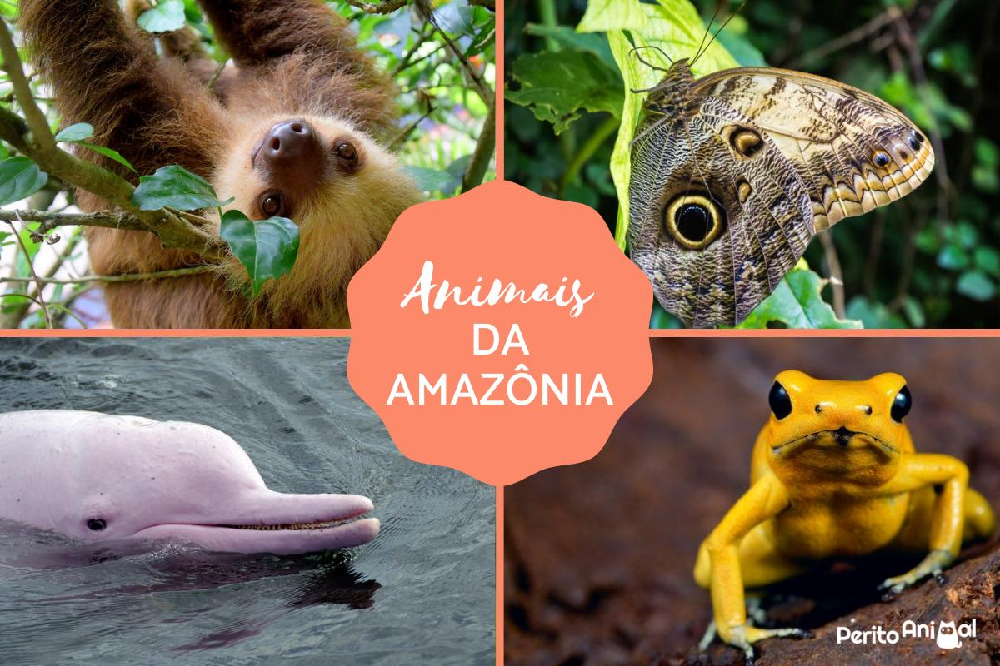
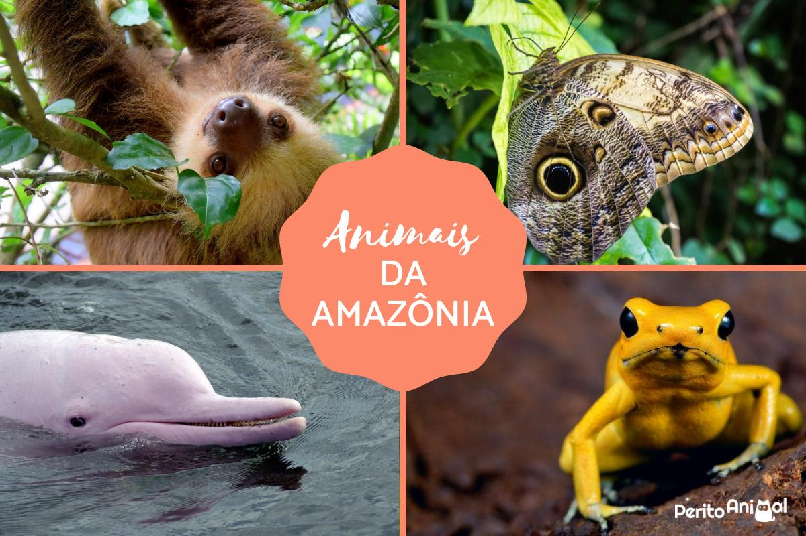

Os Problemas
Aumento das enchentes
As árvores absorvem a água da chuva e ajudam na infiltração no solo.A remoção da vegetação natural reduz a capacidade do solo de absorver e reter água, o que leva a um aumento do escoamento superficial e a um maior volume de água a atingir os rios, aumentando assim a possibilidade de inundações.
Calor excessivo e ilhas de calor
O desmatamento reduz a evapotranspiração das plantas,As florestas, ao serem destruídas, liberam carbono e reduzem a capacidade de absorver a radiação solar e água, o que leva a um aumento da temperatura local.
Redução da qualidade de vida
A destruição das florestas impacta a biodiversidade, aumenta a poluição e reduz o contato com áreas verdes, afetando a saúde mental e respiratória, além de destruir o habitat natural de diversas espécies, reduzindo a diversidade de plantas e animais e aumentando o risco de extinção
Perca de Biodiversidade
O desmatamento destrói habitats naturais, levando à extinção ou ameaça de extinção de espécies de plantas e animais, levando a desstruição de cadeias alimentares.
Custos econômicos
O desmatamento pode causar perdas financeiras significativas para o país, devido à perda de biodiversidade, a necessidade de investimentos em infraestrutura para lidar com as consequências, entre outros.
Doenças zoonóticas
O contato entre humanos e animais silvestres em áreas desmatadas aumenta o risco de transmissão de doenças que podem se tornar pandemias.
Como impacta o mundo?
 
